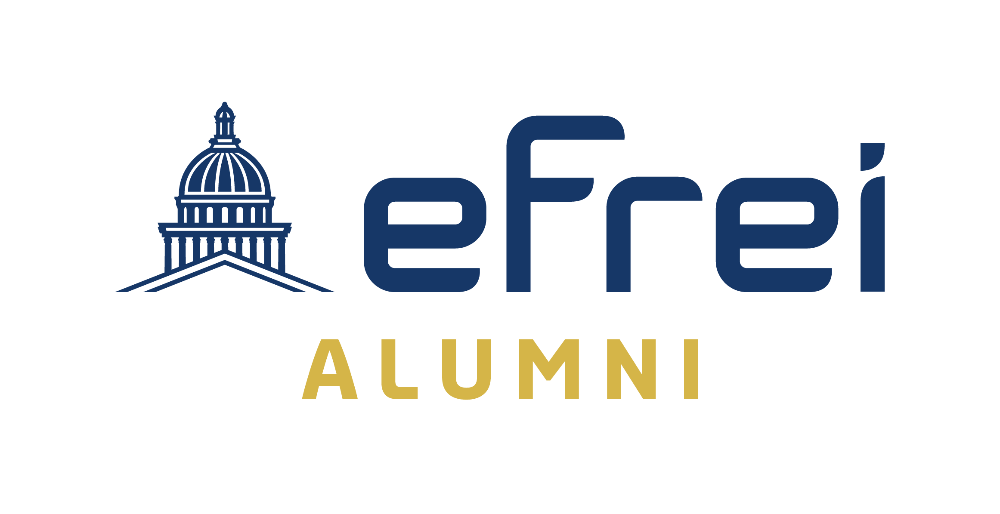

Partenariats & Professionnalisation
Relations entreprises, stages, alternances, carrières et débouchés
Relations entreprises, stages, alternances, carrières et débouchés
▶
Un réseau de plus de 2 000 entreprises partenaires
L'EFREI collabore avec un réseau de plus de 2 000 entreprises partenaires issues de secteurs très variés :
Ces partenariats se déclinent en 6 niveaux offrant des avantages spécifiques : projets tuteurés, conférences d'experts, chaires d'enseignement, visites de sites, événements de recrutement exclusifs.
▶
Événements de recrutement
Tout au long de l'année, l'EFREI organise des événements pour rapprocher étudiants et entreprises :
Forum entreprises
Rencontre annuelle avec des dizaines de recruteurs venus proposer stages, alternances et premiers emplois.
Talent Day
Journée dédiée au recrutement des profils spécialisés (data, cyber, embarqué...).
Job datings
Sessions courtes et dynamiques pour échanger directement avec des professionnels RH.
Tech Day
Présentation des projets étudiants devant un jury de professionnels (7ᵉ édition en juin 2026).
Booste ton stage / alternance
Événements dédiés à la recherche de contrats avec les entreprises partenaires.
Program'Her
Événement dédié à la mixité et aux femmes dans le numérique.
▶
Le Career Center
Le Career Center est un service dédié à l'accompagnement des étudiants dans leur recherche de stage, d'alternance ou d'emploi. Il propose :
▶
Informations pratiques sur les stages
Le cursus ingénieur EFREI inclut plusieurs stages obligatoires représentant au total 12 à 13 mois d'expérience en entreprise :
L'alternance est possible dès la 3ᵉ année du cycle ingénieur, avec un rythme généralement d'1 semaine école / 1 semaine entreprise. Les frais de scolarité en alternance (14 800 €) sont intégralement pris en charge par l'entreprise.
Tous les stages de plus de 2 mois consécutifs sont rémunérés (minimum légal d'environ 4,35 €/h en 2025).
▶
Chiffres clés d'insertion
Les diplômés EFREI bénéficient d'une insertion professionnelle parmi les meilleures des écoles d'ingénieurs :
▶
Métiers occupés par les diplômés
Les diplômés EFREI s'insèrent dans des métiers très variés du numérique, notamment :
Certains diplômés créent leur propre startup dès la sortie de l'école, soutenus par le réseau Efrei Business Angels.
▶
Le réseau Alumni

Efrei Alumni regroupe tous les diplômés et étudiants ayant plus d'un an d'ancienneté. Avec plus de 16 000 anciens élèves actifs répartis sur les 5 continents, ce réseau dynamique :
SEPEFREI, la Junior-Entreprise de l'EFREI fondée en 1985, permet également aux étudiants de réaliser des prestations réelles pour des entreprises dans le domaine des nouvelles technologies.